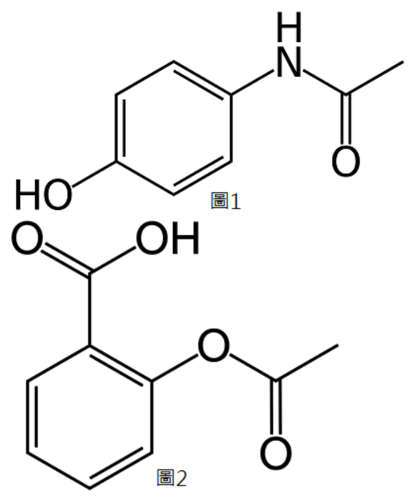
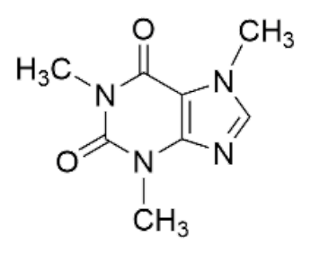

開卷有益 ／
藥師 ／ 藥物分析與生藥學 ／ 113 年第 2 次113 年第 2 次藥師藥物分析與生藥學試題與答案
這一頁是民國 113 年第 2 次藥師藥物分析與生藥學的整份歷屆試題，共 80 題，題目與標準答案出自考選部「國家考試試題及測驗式試題答案」開放資料，其中 78 題附有詳解。以下逐題列出題幹、選項與答案；要計時作答或記錄成績，請用線上練習。
考選部原始場次代碼：113090
線上作答這一科 →
全部 80 題
第 1 題
下列何者不是Karl Fischer水分測定法會使用到的化學品？
（A） ethanol（B） iodine（C） pyridine（D） sulfur dioxide答案：（A）
詳解與考點 正解：傳統 Karl Fischer 水分測定的反應系統以 iodine、sulfur dioxide、pyridine 與 methanol 為典型組成，利用水參與反應後的 iodine 消耗量定量水分。ethanol 不屬於這套標準反應組成，故選 A。
B：iodine 是 Karl Fischer 反應的氧化還原試劑，水量與其消耗量具有化學計量關係，因此不是答案。
C：pyridine 在傳統試劑中提供鹼性反應環境；雖現代試劑可改用其他鹼，但（C）確為經典 Karl Fischer 組成。
D：sulfur dioxide 是 Karl Fischer 反應所需的含硫反應物，不能因其本身不是待測物就排除。
本題考點：Karl Fischer 水分測定法（Karl Fischer titration）——遇到水分定量時，辨識 iodine、sulfur dioxide、鹼與醇類溶劑所構成的反應系統；化學計量滴定（stoichiometric titration）——待測水不是直接量體積，而是換算成反應試劑的等量消耗。
第 2 題
在弱親質子性溶劑中，下列酸強度由大到小的次序為何？①硫酸 ②過氯酸 ③氫溴酸 ④鹽酸
（A） ②①③④（B） ①③②④（C） ②③①④（D） ③②④①答案：（C）
詳解與考點 正解：在弱親質子性溶劑中，溶劑對強酸的均化作用較弱，能較清楚呈現酸本身與溶劑的相對質子轉移能力。四者酸強度由大到小為 perchloric acid、hydrobromic acid、sulfuric acid、hydrochloric acid，即②③①④，故選 C。
A：②①③④將（①）sulfuric acid 排在（③）hydrobromic acid 之前；在本題指定的溶劑條件下，兩者的相對次序應相反。
B：①③②④把（①）sulfuric acid 排為最強，且把（②）perchloric acid 排在（③）hydrobromic acid 之後，兩個相對位置都不符。
D：③②④①將（③）hydrobromic acid 置於（②）perchloric acid 之前，並把（①）sulfuric acid 排為最弱，與本題的酸強度排序不合。
本題考點：非水溶劑中的酸強度（acid strength in nonaqueous solvents）——先判斷溶劑是否會造成 leveling effect，再比較酸在該溶劑中的相對質子轉移能力；弱親質子性溶劑（weakly protophilic solvent）——均化作用較小時，不能直接把水溶液中的表觀強度概念不加區分地套入。
第 3 題
下列何種化合物適合以碘直接滴定法（iodimetry）分析？
（A） methyl para-hydroxybenzoate（B） methyl benzoate（C） liquefied phenol（D） ascorbic acid答案：（D）
詳解與考點 正解：iodimetry 是以 iodine 直接滴定還原性物質的方法。ascorbic acid 具有還原性，可將 I2 還原為 I−，本身被氧化為 dehydroascorbic acid；終點可由游離 iodine 的出現判定，故選 D。
A：methyl para-hydroxybenzoate 是酯類防腐劑，沒有適合在 iodimetry 中定量消耗 iodine 的還原性官能基。
B：methyl benzoate 同為酯類，缺乏可與 iodine 進行定量氧化還原反應的還原性結構，不能因含有芳香環而視為適用。
C：liquefied phenol 的分析通常著眼於其芳香環取代反應；它不是以直接還原 iodine 的反應作為標準 iodimetry 定量依據。
本題考點：碘直接滴定法（iodimetry）——分析物必須能定量還原 iodine，先從氧化還原性而非藥物用途判斷；ascorbic acid 氧化還原（ascorbic acid redox reaction）——看到其 enediol 還原性時，可連結 iodine 被還原為 iodide。
第 4 題
下列指示劑何者不適合用於非水酸滴定分析？
（A） crystal violet（B） thymol blue（C） malachite green（D） quinaldine red答案：（B）
詳解與考點 正解：非水酸滴定常以 perchloric acid 滴定 glacial acetic acid 中的弱鹼，指示劑必須在該強酸性非水介質出現清楚變色。thymol blue 的變色範圍不適合此系統的終點判定，故選 B。
A：crystal violet 可在非水酸滴定中作為指示劑，能對 perchloric acid 造成的酸性變化呈現可辨識的顏色轉換，因此不是答案。
C：malachite green 也是常見的非水酸滴定指示劑；其顏色變化適合用來觀察弱鹼被強酸滴定的終點。
D：quinaldine red 可用於此類非水酸滴定。這些染料型指示劑看似名稱陌生，但判斷重點在其於 glacial acetic acid 系統的變色行為，而非是否為水溶液常用指示劑。
本題考點：非水酸滴定（nonaqueous acid titration）——弱鹼在水中終點不清楚時，可改在 glacial acetic acid 中以 perchloric acid 滴定；非水滴定指示劑（nonaqueous titration indicator）——指示劑是否適用要看其在指定溶劑與滴定液下的變色區域，不只看一般水溶液 pH 範圍。
第 5 題
使用非水滴定法定量弱鹼藥物時，一般使用強酸做為滴定液，最常與下列何者搭配？
（A） 乙酸（B） 水楊酸（C） 苯甲酸（D） 硫酸氫鈉答案：（A）
詳解與考點 正解：弱鹼藥物的非水滴定通常以 perchloric acid 為強酸滴定液，並以冰醋酸作溶劑；乙酸可提供適合弱鹼接受質子的非水環境，使終點較水溶液清楚，故選 A。
B：水楊酸是弱有機酸，不是與 perchloric acid 搭配作為此項非水滴定介質的標準選擇；它不能取代（A）乙酸的溶劑角色。
C：苯甲酸同樣是弱有機酸，並非用來建立弱鹼非水酸滴定所需反應環境的常用溶劑。
D：硫酸氫鈉是鹽類，不能作為此系統中兼具溶解與介質功能的無水有機溶劑。
本題考點：弱鹼的非水滴定（nonaqueous titration of weak bases）——水溶液終點不佳時，選能增進弱鹼鹼性表現的無水介質；perchloric acid in glacial acetic acid——看到強酸滴定液與弱鹼的組合時，優先連結冰醋酸，而不是任一名稱帶有酸字的物質。
第 6 題
以0.1 N HCl溶液滴定某鹼性化合物（MW = 74.09，1 M = 2 N），則0.1 N HCl對此化合物之效價（mg/mL） 為：
（A） 3.71（B） 7.41（C） 14.82（D） 74.09答案：（A）
詳解與考點 正解：效價要以當量而非分子量直接計算。題示 1 M = 2 N，表示每 1 mol 化合物相當於 2 eq，因此當量重 = 74.09 g/mol ÷ 2 eq/mol = 37.045 g/eq。0.1 N HCl = 0.1 eq/L，所以每 L 可滴定的化合物量 = 0.1 eq/L × 37.045 g/eq = 3.7045 g/L；又 1 g/L = 1 mg/mL，故效價 = 3.7045 mg/mL，約為 3.71 mg/mL，故選 A。
B：7.41 mg/mL 來自 0.1 eq/L × 74.09 g/eq，等於把題示的 1 M = 2 N 忽略，誤將分子量當成當量重。
C：14.82 mg/mL 相當於 0.4 eq/L × 37.045 g/eq，與題目給定的 0.1 N 相差 4 倍，無法由已知條件推出。
D：74.09 mg/mL 只重複了分子量數值，沒有納入 HCl 的 normality，也沒有將 1 mol 對應 2 eq 的條件帶入。
本題考點：當量重（equivalent weight）——題目給出每 mole 對應幾個 equivalent 時，先以 MW 除以該數值；效價計算（titer calculation）——用 normality × equivalent weight 求 g/L，再以 1 g/L = 1 mg/mL 換算為 mg/mL；酸鹼滴定的化學計量（acid-base stoichiometry）——計算前先辨識 M 與 N 是否相同，價數不是 1 時不能直接互換。
第 7 題
下列何者最不常用AAS進行分析？
（A） 電解質輸注液中鈉與鉀的含量分析（B） 蔗糖中鉛的限量分析（C） 多元醇中鎳的限量分析（D） 胰島素中鋅的限量分析答案：（A）
詳解與考點 正解：AAS 的強項是以特徵吸收線定量微量金屬。電解質輸注液中的 sodium 與 potassium 屬高含量主要離子，例行檢驗更常選 flame photometry 或 ion-selective electrode；AAS 雖可測量，但在四者中最不常用，故選 A。
B：蔗糖中的 lead 屬痕量重金屬限量分析，AAS 對此類元素具有良好選擇性與靈敏度，因此是常見用途。
C：多元醇中的 nickel 也屬低濃度金屬雜質，使用 AAS 測定符合其痕量元素分析的適用範圍。
D：胰島素中的 zinc 為金屬元素含量分析，AAS 可利用 zinc 的特徵吸收線定量，與（A）高濃度常規電解質檢驗的情境不同。
本題考點：原子吸收光譜法（atomic absorption spectroscopy, AAS）——遇到痕量金屬雜質或金屬元素含量時，優先考慮以元素特徵吸收線定量；火焰光度法與離子選擇電極（flame photometry/ion-selective electrode）——高含量 sodium、potassium 的常規檢驗，先比較這些更直接的技術。
第 8 題
若檢品溶液為無色，於重金屬檢查時常加入下列何種試劑顯色？
（A） 硫化氫（B） 碘化鉀（C） 氫氧化鈉（D） 碳酸鈣答案：（A）
詳解與考點 正解：重金屬檢查利用金屬離子與 sulfide 形成有色或深色、難溶的金屬硫化物；當檢品本身無色時，通入 hydrogen sulfide 可使這個顏色反應清楚呈現，故選 A。
B：potassium iodide 對特定金屬可形成配位物或沉澱，但不是傳統重金屬限量檢查用來普遍顯色的 sulfide 試劑。
C：sodium hydroxide 可使部分金屬生成 hydroxide 沉澱，卻不具本題以 sulfide 顏色比較為核心的通用顯色原理。
D：calcium carbonate 主要提供鹼性或作為固體材料，不能和痕量重金屬形成可供比色判定的特徵性有色硫化物。
本題考點：重金屬限量檢查（heavy metal limit test）——看到顯色比較時，先連結金屬 sulfide 的有色沉澱；硫化物沉澱（metal sulfide precipitation）——檢品若無底色，產物顏色更能作為痕量金屬存在與否的判讀訊號。
第 9 題
以蒸餾法測定乙醇含量，下列敘述何者正確？
（A） 大多數之流浸膏、酊劑等皆適用此法測定乙醇含量（B） 若餾出液呈混濁時，可加入碳酸鈉振搖、過濾（C） 檢品含乙醇量低於30%者，須以檢品二倍量之水稀釋之，然後蒸餾（D） 蒸餾時可加鎂乳防止泡沫產生答案：（A）
詳解與考點 正解：蒸餾法利用 ethanol 的揮發性，先將其自多為非揮發性成分的製劑基質中分離，再測定餾出液的酒精含量。大多數流浸膏、酊劑等含乙醇製劑皆可依此原理處理，故選 A。
B：餾出液混濁時，不能把加入 sodium carbonate 振搖、過濾當作通用處理；該鹽可能改變樣品組成，並非本法的標準澄清步驟。
C：乙醇含量低於 30% 時的蒸餾前處理須依方法規定調整，並非一律加入檢品二倍量的水；固定倍數正是此敘述的錯點。
D：鎂乳不是蒸餾乙醇時的通用消泡添加物。樣品若有起泡問題，應依製劑性質採用符合方法的前處理，而不能以鎂乳概括處理。
本題考點：蒸餾法測定乙醇（distillation assay of ethanol）——當 ethanol 混在非揮發性製劑基質中時，先以揮發性差異分離再測定；藥典檢品前處理（pharmacopoeial sample preparation）——混濁、稀釋與起泡的處理要依指定方法，不能把任一化學處理當成通則。
第 10 題
在揮發油的含量測定中，下列組合何者錯誤？
（A） alcohol content－acetylization flask（B） aldehyde content－Cassia flask（C） ketone content－Babcock bottle（D） phenol content－Cassia flask答案：（C）
詳解與考點 正解：本題考的是揮發油各成分測定與指定器皿的配對。ketone content 與 Babcock bottle 並非本題所列的正確組合；不能因 Babcock bottle 也是定量用玻璃器皿，就把它套到酮含量測定，故選 C。
A：alcohol content 可配合 acetylization flask 進行衍生化相關測定，器皿與反應目的相符，因此不是答案。
B：aldehyde content 與 Cassia flask 的組合符合本題的揮發油成分測定配置，故此敘述正確。
D：phenol content 也可使用 Cassia flask 測定。與（B）同用一種器皿不表示測定原理完全相同，判斷時仍要記住各成分的指定組合。
本題考點：揮發油成分測定（volatile oil constituent assay）——遇到器皿配對題時，以成分與指定操作的固定組合判斷，不以器皿名稱的熟悉度猜測；Babcock bottle 與揮發油分析（Babcock bottle in volatile oil analysis）——器皿可用於特定定量步驟，不可任意延伸為所有官能基測定都適用。
第 11 題
在油脂、脂肪及蠟中出現脂肪酸的原因，不是由下列何項造成？
（A） 防腐劑（B） 製備過程（C） 儲存未避光（D） 細菌的作用答案：（A）
詳解與考點 正解：油脂、脂肪與蠟中的游離脂肪酸多由酯鍵水解、氧化變敗或微生物脂解而來。防腐劑的目的在抑制微生物生長，並不會本身造成脂肪酸生成，故選 A。
B：製備過程中的水分、加熱或不當操作可能促進脂質水解，釋出脂肪酸；此敘述是在說明可能成因，所以不是答案。
C：儲存未避光會加速脂質氧化與酸敗，進而增加酸性降解產物；避光是減少此類變化的保存條件，因此（C）是可能原因。
D：細菌可產生 lipase 分解脂質的酯鍵，釋出游離脂肪酸，故也是脂肪酸出現的合理來源。
本題考點：脂質水解（lipid hydrolysis）——發現游離脂肪酸時，先追查酯鍵是否受水分、熱或 lipase 破壞；脂質氧化與酸敗（lipid oxidation and rancidity）——保存條件中遇到光照與氧氣時，要連結油脂品質劣化，而非把防腐劑視為生成脂肪酸的原因。
第 12 題
有關紅外光光譜法的敘述，下列何者錯誤？
（A） 固體樣品可以製成溴化鉀盤進行測定（B） 可以測定氣體樣品（C） 吸收光譜無法轉換成穿透光譜（D） 減弱總反射（ATR）技術可用於測試高濃度成分答案：（C）
詳解與考點 正解：紅外光儀器可將吸光度與穿透率互相換算，關係式為 A = -log10 T；因此吸收光譜並非無法轉換成穿透光譜。（C）把可換算的兩種表現方式說成不可轉換，故為錯誤敘述，故選 C。
A：固體樣品可與 potassium bromide 混合壓成 KBr pellet 後量測，這是傳統 IR 固體樣品製備方式之一，所以不是答案。
B：氣體樣品可置於具適當光徑長的氣體池中測定；IR 不限於固體或液體樣品。
D：ATR 以 evanescent wave 探測樣品表面，等效光徑較短，對高濃度或強吸收樣品可降低吸收飽和的問題，因此敘述正確。
本題考點：吸光度與穿透率（absorbance and transmittance）——光譜縱軸表示法不同時，用 A = -log10 T 判斷能否互換；紅外光樣品製備（IR sample preparation）——固體可用 KBr pellet、氣體可用氣體池，依樣品物態選擇；減弱總反射（attenuated total reflection, ATR）——強吸收或高濃度樣品可利用較短有效光徑避免訊號過度吸收。
第 13 題
關於原子光譜分析法之敘述，下列何項錯誤？
（A） 有放射光譜分析與吸收光譜分析兩種（B） 吸收光譜分析靈敏度較放射光譜分析佳（C） 進行原子光譜分析時，皆須將樣品高溫燃燒（D） 放射光譜分析儀須搭配空心陰極燈答案：（D）
詳解與考點 正解：放射光譜分析是量測樣品中的激發原子自行放出的特徵光，不需要外加空心陰極燈。空心陰極燈是原子吸收光譜法提供元素特徵入射光的光源，將它列為放射光譜分析儀的必備配件是把兩種方法混淆，故選 D。
A：原子光譜分析可分為放射光譜分析與吸收光譜分析；前者讀樣品發射光，後者讀樣品對外來光的吸收，敘述正確。
B：原子吸收光譜分析通常具良好靈敏度與選擇性，尤其適合痕量元素定量，因此在本題的概括比較中不是錯誤敘述。
C：原子光譜分析的共同前提是將樣品原子化，但火焰、石墨爐或電漿等原子化來源並不都等同於燃燒，冷蒸氣法與氫化物產生法更屬非高溫的原子化路徑，因此以「高溫燃燒」概括原子化並不嚴謹；本題官方答案為 D，（C）的文字同樣有爭議，判讀時以（D）把空心陰極燈錯配給放射光譜分析的明確錯誤為準。
本題考點：原子吸收光譜法（atomic absorption spectroscopy, AAS）——需要外加元素特徵光源時，連結空心陰極燈與樣品吸收；原子放射光譜法（atomic emission spectroscopy, AES）——樣品被激發後自行發光，判斷時不要額外加上吸收法的光源；原子化（atomization）——無論使用火焰、石墨爐或電漿，先形成自由原子才能觀察原子特徵光譜。
第 14 題
有關paracetamol（結構如下圖1）和aspirin（結構如下圖2）之氫核磁共振譜（CD3OD）比較，下列何者相 同？

（A） 芳香區的氫數目（B） 甲基（-CH3）的化學位移（C） 芳香區氫的偶合型式（D） 芳香區氫的化學位移答案：（A）
詳解與考點 正解：Paracetamol（圖1）為對位雙取代苯環（1,4-取代：－OH 與－NHC(=O)CH3），芳香區有 4 個氫；aspirin（圖2）為鄰位雙取代苯環（1,2-取代：－COOH 與－OC(=O)CH3），芳香區同樣是 4 個氫，兩者芳香區氫數目相同，故選 A。
B：兩者甲基所處化學環境不同，paracetamol 的甲基接在醯胺基（－NHC(=O)CH3）上、aspirin 的甲基接在酯基（－OC(=O)CH3）上，去屏蔽程度不同，化學位移不會相同。
C：對位雙取代與鄰位雙取代的芳香氫偶合型式不同，前者呈現對稱的 AA'BB' 型式，後者因四個氫彼此化學環境互異，呈現較複雜的多重峰，兩者型式不同。
D：不同取代基（酚基與醯胺基 vs 羧酸與酯基）對苯環上各氫的去屏蔽效應不同，芳香氫的化學位移不會相同。
本題考點：苯環取代位置決定芳香氫數目與偶合型式（substitution pattern determines aromatic H count and coupling pattern）——對位雙取代與鄰位雙取代雖然芳香氫總數可能相同，但化學環境對稱性不同，判斷氫譜異同時要分開看「數目」與「型式／位移」兩件事；取代基對芳香氫化學位移的去屏蔽效應（substituent effects on aromatic shift）——推電子基（如酚基）與拉電子基（如酯基）對相鄰氫的位移方向相反。
第 15 題
下列何者不會影響化學位移（ppm）？
（A） 磁場強度（B） 官能基團的誘導效應（C） 去遮蔽效應（D） 環流效應答案：（A）
詳解與考點 正解：化學位移以 ppm 表示時，是共振頻率相對於參考物的比值；外加磁場強度改變會使所有共振頻率按比例改變，因此 ppm 值不變。官能基的誘導效應、電子去遮蔽與芳香環電流都會改變核周電子屏蔽，進而改變化學位移，故選 A。
B：官能基的誘導效應會經由鍵結傳遞電子密度改變，使鄰近核的屏蔽程度不同，因而改變訊號的 ppm 位置。
C：去遮蔽使核感受的有效磁場增強，共振位置往較低磁場、較高 ppm 移動，所以會影響化學位移。
D：環流效應造成各空間位置的局部磁場不同；芳香環附近的質子因此可能被遮蔽或去遮蔽，ppm 會隨位置改變。
本題考點：化學位移（chemical shift）——比較 NMR 訊號位置時用 ppm，可跨不同磁場強度比較；核磁遮蔽（shielding）——判斷官能基、各向異性或環流效應時，看它改變的是核周有效磁場，而非儀器磁場本身。
第 16 題
樣品中鏡像異構物之個別比例可用下列何種方法測定？
（A） 熔點測定法（B） 紅外光光譜分析法（C） 元素分析法（D） 旋光度分析法答案：（D）
詳解與考點 正解：鏡像異構物在非手性環境中的多數物理光譜性質相同，但對平面偏振光的旋轉方向相反。已知純對映體的比旋光度時，可由觀測旋光度求出對映體過量 ee，再將 ee 換算為兩個鏡像異構物的個別比例；旋光度分析法因此可用於此題，故選 D。
A：鏡像異構物的熔點在非手性條件下通常相同，熔點可反映純度或晶型，不能分辨兩個對映體的比例。
B：紅外光譜量測的是分子振動；兩個對映體在非手性介質中的振動能階相同，光譜不會提供其相對比例。
C：元素分析只給出元素組成與比例。鏡像異構物的分子式完全相同，因此無法藉此區分。
本題考點：旋光度（optical rotation）——混合物只有兩個對映體且有純品參考值時，可由旋光度的大小與正負求 ee 及對映體比例；對映體分析（enantiomer analysis）——熔點、IR 與元素組成在非手性條件下通常相同，須改用手性辨識或旋光方法。
第 17 題
下列何種儀器最常被應用於藥物與代謝物之血中濃度定量分析？
（A） 氣相層析－三段四極柱質譜（gas chromatography-triple quadrupole mass spectrometry）（B） 液相層析－三段四極柱質譜（liquid chromatography-triple quadrupole mass spectrometry）（C） 液相層析－磁場式質譜（liquid chromatography-magnetic sector mass spectrometry）（D） 氣相層析－磁場式質譜（gas chromatography-magnetic sector mass spectrometry）答案：（B）
詳解與考點 正解：血中藥物及代謝物常濃度很低，而且多為極性、非揮發性分子；液相層析可直接分離這類分析物，三段四極柱質譜以 multiple reaction monitoring 提供高選擇性與靈敏度，最適合常規定量，故選 B。
A：氣相層析－三段四極柱質譜適合揮發且耐熱的分析物；許多血中藥物與代謝物須先衍生化才適合 GC，通用性較低。
C：磁場式質譜可提供高解析度或精確質量資訊，但並非血中藥物常規定量最常用的分析器配置。分辨關鍵在定量工作重視穩定的離子轉換監測，而非只追求高解析度。
D：GC 與磁場式分析器同時受限於揮發性需求及非例行定量的儀器定位，較不符合血中藥物與代謝物的常見檢測情境。
本題考點：液相層析串聯質譜（LC-MS/MS）——分析血液中低濃度、極性或非揮發性藥物時，優先考慮 LC 搭配串聯 MS；三段四極柱（triple quadrupole）——定量時以特定前驅離子至產物離子的轉換提高選擇性，適合複雜生物基質。
第 18 題
利用紫外光光譜儀測定化合物之pKa值時，下列敘述何者錯誤？
（A） 檢測波長應設定於化合物解離及未解離形式之吸收係數最接近處（B） 應用於當pH變化時吸收波長會改變的化合物（C） 須在化合物之pKa值附近進行測定（D） 用於酸性物質時，pKa = pH + log (Ai－A)/(A－Au)答案：（A）
詳解與考點 正解：以紫外光譜測 pKa，必須把解離與未解離形式的光譜差異放大，才能讓吸光度隨 pH 的改變具有足夠辨識力。因此檢測波長應選在兩者吸收係數差異較大的位置，不是最接近的位置，故選 A。
B：酸鹼平衡改變會改變發色團的電子分布；若 pH 改變伴隨吸收波長或吸光度改變，正可作為紫外光譜法追蹤兩種型態比例的訊號。
C：在 pKa 附近，解離與未解離形式的比例都不可忽略，吸光度對 pH 最有資訊量，故應在此範圍量測。
D：對酸性化合物，在選定波長下以 Ai 與 Au 分別代表完全解離與未解離的端點吸光度時，題列關係式可由 Henderson-Hasselbalch 方程式與總吸光度關係導出。
本題考點：光譜法測定 pKa（spectrophotometric pKa determination）——選波長時找解離型與未解離型吸收差異大的區域，才有足夠靈敏度；Henderson-Hasselbalch equation——量測 pKa 時要在 pKa 附近建立 pH 與兩型態比例的關係，不可只量單一完全解離狀態。
第 19 題
對於電子撞擊（electron impact, EI）游離法的敘述，下列何者錯誤？
（A） 相對於常壓游離法，EI游離法更早被應用（B） 相對於電灑游離法（electrospray ionization, ESI），EI游離法產生較少的碎裂片段（C） EI游離法的原理是利用電子加速撞擊分析物，而使分析物帶電荷（D） EI游離法常用的加速電壓為70 eV答案：（B）
詳解與考點 正解：電子撞擊屬於硬游離法，高能電子撞擊分子時除形成分子離子外，也容易造成鍵結斷裂而產生大量碎裂離子。電灑游離則是較軟的游離方式，通常較能保留完整分子離子，所以「EI 產生較少碎裂片段」的方向相反，故選 B。
A：EI 是早期發展並廣泛用於 GC-MS 的游離技術；常壓游離法是後來為液相與常壓介面發展的技術群，時間順序的敘述成立。
C：EI 利用加速電子與分析物碰撞，使分析物失去電子並帶正電荷，這正是其游離的基本原理。
D：70 eV 是 EI 常用的標準電子能量，可兼顧游離效率與可比較的碎裂圖譜。
本題考點：電子撞擊游離（electron impact ionization）——看到高能電子撞擊與明顯碎裂圖譜時，判為硬游離的 EI；電灑游離（electrospray ionization）——需要保留完整分子或分析極性大分子時，優先聯想到較軟的 ESI。
第 20 題
關於螢光分析法的敘述，下列何者正確？
（A） 不適於肽類藥物之定量分析（B） 不適於檢測肽類藥物製劑之安定性（C） 不適於微量不純物之分析（D） 可透過衍生化檢測血液透析液之鋁（III）含量答案：（D）
詳解與考點 正解：螢光分析可藉衍生化使鋁（III）形成可量測的螢光錯合物，利用低背景與高靈敏度偵測血液透析液中的微量鋁，因此題列作法可行，故選 D。
A：肽類藥物可利用其本身的螢光基團，或經螢光衍生化後定量；「不適於」把可調整的檢測條件說成絕對限制，並不正確。
B：螢光檢測可與分離方法或衍生化結合，用以追蹤肽類藥物及其降解產物，能應用於製劑安定性研究。
C：螢光法背景低、靈敏度高，正適合以適當反應或分離步驟分析微量不純物，不能視為其不適用範圍。
本題考點：螢光分析法（fluorimetry）——待測物本身有螢光或可衍生化時，可用高靈敏度訊號定量；螢光衍生化（fluorescence derivatization）——微量金屬或無天然螢光的分析物可先形成螢光錯合物，再以低背景訊號測定。
第 21 題
關於長葉毛地黃苷錠的溶離測試，下列敘述何者錯誤？
（A） 主成分定量是採用螢光分析法（B） 合格標準是主成分於1小時內的釋放不得少於80%（C） 取樣後須以強酸和雙氧水處理後，進行螢光度分析（D） 取樣後可與鋁離子形成錯合物後，再進行分析答案：（D）
詳解與考點 正解：長葉毛地黃苷錠的溶離試驗依題示方法，以螢光度法定量並在取樣後經強酸與雙氧水處理；與鋁離子形成錯合物不是此品項溶離測試的既定分析流程，故選 D。
A：本試驗的主成分定量採螢光分析法，關鍵在將溶離液依規定前處理後轉為可量測的螢光訊號。
B：主成分在 1 小時內釋放不得少於 80% 是題列的合格判準，時間與釋放比例必須一起判讀。
C：取樣後以強酸和雙氧水處理，再進行螢光度分析，是本題所述方法的前處理與量測步驟。
本題考點：溶離試驗（dissolution test）——判讀品項規格時，同時核對分析法、取樣前處理、時間與釋放百分比；螢光度定量（fluorometric assay）——只有在規定的反應與前處理條件下，螢光訊號才能作為主成分定量依據。
第 22 題
質譜法使用電灑游離（electrospray ionization）源時，下列敘述何者錯誤？
（A） 進樣毛細管端可施加負電壓以產生帶負電荷的離子（B） 分析物可能與溶液中的離子結合而增加質荷比（C） 進樣毛細管端可施加正電壓以產生帶正電荷的離子（D） 可將分析物裂解為多種離子碎片答案：（D）
詳解與考點 正解：電灑游離是在溶液中形成帶電液滴，經溶劑蒸發與庫倫裂解後釋出分析物離子；它主要負責游離而非將分析物裂解成多種產物離子。要取得有系統的碎片通常須再經串聯質譜的碰撞裂解，因此題列敘述錯誤，故選 D。
A：在進樣毛細管施加負電壓可產生負離子模式，適用於容易去質子化或形成陰離子的分析物。
B：分析物可與溶液中的離子形成加合離子，例如與金屬離子結合；其觀測到的 m/z 會因加合而增加。
C：在進樣毛細管施加正電壓可形成正離子模式，常見於容易質子化的分析物。
本題考點：電灑游離（electrospray ionization）——判斷 ESI 時先看溶液、帶電液滴與軟游離，不把它和裂解步驟混為一談；串聯質譜（tandem mass spectrometry）——需要結構性產物離子時，對已選定的前驅離子再施加碰撞裂解。
第 23 題
有關旋光計之敘述，下列何者錯誤？
（A） 鈉光為常用光源（B） 旋光度與貯液管長度無關（C） 起偏鏡與檢偏鏡是由兩個三稜鏡黏合而成，結構相同（D） 在起偏鏡之後的半影稜鏡能藉半影效應，使操作者易於調整終點答案：（B）
詳解與考點 正解：旋光度受樣品濃度、物質本性、溫度、波長及貯液管長度影響；在其他條件固定時，旋光度與光程長度成正比。因此把旋光度說成與貯液管長度無關，違反比旋光度關係式，故選 B。
A：鈉光的 D 線波長穩定，常作為旋光計的光源，便於不同測定結果互相比較。
C：起偏鏡與檢偏鏡的功能分別是產生與分析平面偏振光，傳統旋光計可使用結構相同的稜鏡作為兩者。
D：半影稜鏡使視野出現可比較的明暗差異；接近等亮終點時較容易微調檢偏鏡位置。
本題考點：比旋光度（specific rotation）——比較旋光資料時，先以濃度與光程長度校正，常用關係為 α = [α]lc；半影法（half-shade method）——調整檢偏鏡時以兩半視野等亮為終點，可提高人工讀值的判定性。
第 24 題
下列何者為紅外光光譜法常用之檢品貯液槽材質？
（A） 玻璃（B） 石英（C） 氯化鈉（D） 塑膠答案：（C）
詳解與考點 正解：紅外光光譜常量測中紅外區，檢品貯液槽的窗片必須能透過此區的光。氯化鈉對中紅外光具有良好穿透性，故常用作液體樣品池的窗片材質，故選 C。
A：一般玻璃對中紅外光有明顯吸收，會遮蔽分析物的吸收訊號，不能作為常用 IR 貯液槽窗片。
B：石英常用於紫外可見光區的比色皿，但在中紅外區的穿透性不如氯化鈉，並非此題的標準選擇。
D：塑膠本身含有多種官能基吸收帶，容易造成背景與干擾，不適合當作常用紅外光檢品槽材料。
本題考點：紅外光譜檢品窗片（IR cell window）——選材時先確認窗片在欲測紅外區透明，再考慮樣品相容性；氯化鈉窗片（sodium chloride window）——中紅外液體樣品常用，但操作時須避免受潮造成表面劣化。
第 25 題
核磁共振儀所用外加磁場（H0）強度增強時，下列敘述何者錯誤？
（A） ΔE加大（B） 偶合常數（hertz）增加（C） 靈敏度及解析度皆提升（D） 共振頻率（ν）增大答案：（B）
詳解與考點 正解：提高外加磁場 H0 會使核自旋能階差與共振頻率增加，也會拉大以 Hz 表示的化學位移間距；但偶合常數 J 是核間自旋－自旋交互作用的量，在 Hz 單位下不隨 H0 改變。因此「偶合常數增加」錯誤，故選 B。
A：能階差符合 ΔE = hν；H0 增強時拉莫爾頻率上升，ΔE 也隨之加大。
C：較高磁場通常帶來較高靈敏度，且相同 ppm 差在 Hz 上的距離變大，有利於訊號分辨。
D：共振頻率與 H0 成正比，磁場強度增加時 ν 會增大。
本題考點：偶合常數（coupling constant）——比較不同磁場的 NMR 圖譜時，J 以 Hz 表示且保持不變；磁場強度效應（magnetic field strength）——高磁場會增加共振頻率與 Hz 尺度的化學位移分散，但不改變 ppm 化學位移。
第 26 題
將每錠標稱含量為40 mg之furosemide，經萃取稀釋後配製成濃度預期為1 mg/ 100 mL之檢品，於271 nm下 測得其吸光度值為0.45，已知 furosemide之A（1%,1 cm）為500，則此錠劑之實際含量百分比為多少？
（A） 80（B） 90（C） 95（D） 100答案：（B）
詳解與考點 正解：本題以比吸光係數換算檢品濃度，再與預期濃度相比。1 cm 光程下，測得濃度為 c = 0.45 / 500 = 0.0009%（w/v）。題設預期濃度為 1 mg/100 mL = 0.001 g/100 mL = 0.001%（w/v）。實際含量百分比 = 0.0009% / 0.001% × 100% = 90%，故選 B。
A：80% 時檢品濃度應為 0.0008%（w/v），在相同比吸光係數與光程下吸光度值應為 0.40，與題測的 0.45 不符。
C：95% 時檢品濃度應為 0.00095%（w/v），對應的吸光度值應為 0.475，不是題測值。
D：100% 代表檢品正好為 0.001%（w/v），對應的吸光度值應為 0.50；不可把標稱濃度直接當作實測濃度。
本題考點：比吸光係數（specific absorbance）——已知 1% 比吸光係數且光程固定為 1 cm 時，先由吸光度換成 %（w/v）濃度；含量百分比（assay percentage）——檢品濃度與標示濃度必須先統一單位，再以實測值／預期值 × 100% 計算。
第 27 題
如分析物之質荷比（m/z）係分析離子通過磁場而獲得，則此質譜儀分析器為下列何者？
（A） quadrupole analyzer（B） time-of-flight analyzer（C） magnetic analyzer（D） ion trap analyzer答案：（C）
詳解與考點 正解：離子通過磁場時會受洛倫茲力偏轉，偏轉半徑取決於離子的動量與電荷，因此可據以分離不同 m/z 的離子；這是磁場式分析器的工作原理，故選 C。
A：四極柱分析器以直流與射頻電場篩選具有穩定軌跡的離子，不是以通過磁場的偏轉半徑測得 m/z。
B：飛行時間分析器讓離子飛越固定距離，再以到達偵測器的時間換算 m/z；核心判準是飛行時間而非磁場偏轉。
D：離子阱以射頻電場捕捉、選擇與逐出離子，m/z 的判定來自阱內穩定性條件，不是磁場。
本題考點：磁場式質譜（magnetic sector mass spectrometry）——看到磁場偏轉或曲率半徑時，聯想到以動量／電荷分離離子；質譜分析器（mass analyzer）——辨認儀器時以分離原理區分：四極柱看電場穩定軌跡、TOF 看飛行時間、離子阱看捕捉與逐出。
第 28 題
關於GC方法確效定量顛茄鹼眼藥水中不純物的敘述，下列何者錯誤？
（A） 偵測極限（limit of detection, LOD）低於不純物的限量濃度，即可用於不純物之定量（B） 為正確定量，不純物須與atropine具分離選擇性（selectivity）（C） 利用標準品添加於安慰劑（placebo），以評估方法的準確性（accuracy）（D） 利用重複注射之定量結果，評估分析方法的重複性（repeatability）答案：（A）
詳解與考點 正解：偵測極限 LOD 只表示能辨認分析物存在的最低量，未保證結果具有可接受的準確度與精密度；不純物要作定量判定，必須以定量極限 LOQ 是否低於限量濃度為準。因此僅以 LOD 低於限量濃度判定可定量是錯誤的，故選 A。
B：不純物必須與 atropine 的主峰有足夠分離選擇性，否則共洗脫會使不純物的定量受主成分干擾。
C：將不純物標準品添加至安慰劑，可在接近實際製劑基質的條件下比較回收量，是評估準確性的作法。
D：在相同條件下重複注射並比較定量結果，可檢驗短時間內測定結果的一致性，屬於重複性評估。
本題考點：偵測極限與定量極限（LOD/LOQ）——只需知道有沒有時看 LOD；要報出可靠數值時必須看 LOQ；分析方法確效（analytical method validation）——選擇性、準確性與重複性各對應分離干擾、加標回收與重複測定，不可互相替代。
第 29 題
以HPLC分析光學異構物時，下列何者最不適用？
（A） 使用Pirkle type管柱（B） 使用cyclodextrin 管柱（C） 使用C18管柱，在移動相中添加serine（D） 使用C18管柱，在移動相中添加cetrimide答案：（D）
詳解與考點 正解：光學異構物要在層析中分開，系統必須引入手性辨識，使兩個對映體形成可區分的交互作用。cetrimide 是非手性的離子對試劑；即使加在 C18 移動相中也不能建立手性選擇性，因此最不適用，故選 D。
A：Pirkle type 管柱含有手性固定相，可讓兩個對映體產生不同強度的暫時性作用，常用於手性分離。
B：cyclodextrin 管柱的環狀空腔與手性環境可對對映體產生不同包合作用，能用於光學異構物分析。
C：C18 本身不具手性，但移動相加入具手性的 serine 時，可藉暫時形成非對映性作用而產生分離差異。分辨關鍵在添加物是否具有手性，而不只是管柱都叫 C18。
本題考點：手性層析（chiral chromatography）——分離對映體時，固定相或移動相至少一方必須提供手性環境；離子對層析（ion-pair chromatography）——離子對試劑可改變保留行為，但本身非手性時不能取代手性選擇劑。
第 30 題
下列何種分析方法可測定蛋白質之胺基酸序列？
（A） 聚丙烯醯胺膠體電泳法（B） 超高速離心分離法（C） 串聯式液相層析質譜法（D） 快速蛋白質液相層析法答案：（C）
詳解與考點 正解：蛋白質可先酵素消化成胜肽，再以液相層析分離，串聯質譜對選定胜肽產生的碎片離子可提供胺基酸殘基順序資訊；因此串聯式液相層析質譜可用於定序，故選 C。
A：聚丙烯醯胺膠體電泳主要依分子量、電荷或構形分離蛋白質，能比較大小或純度，不能直接讀出胺基酸序列。
B：超高速離心依沉降係數或密度分離分子與胞器，提供的是物理分離資訊，不會產生序列資訊。
D：快速蛋白質液相層析著重蛋白質純化與分離；若未結合後續定序偵測，單靠 FPLC 無法判定胺基酸排列。
本題考點：串聯質譜定序（tandem mass spectrometry sequencing）——胜肽碎片的質量差可對應胺基酸殘基，據以重建序列；蛋白質分離（protein separation）——電泳、離心與 FPLC 是分離或純化工具，是否能定序取決於後續具有序列資訊的偵測方法。
第 31 題
利用陽離子交換樹脂對含0.1 M氯化銨緩衝液之adrenaline進行固相萃取時，下列敘述何者錯誤？
（A） 萃取管須先以含Ca2+、Mg2+或 NH4+離子之緩衝溶液進行平衡（B） 檢品溶液須以比其pKa低1到2個單位pH值的緩衝液配製（C） 萃取管於通過所有檢品溶液後須再以相同緩衝溶液沖洗（D） 可使用1 M氯化銨緩衝液沖提出吸附於萃取管內之adrenaline答案：（A）
詳解與考點 正解：陽離子交換樹脂以帶負電的交換位吸附帶正電的 adrenaline；Ca2+、Mg2+ 與 NH4+ 都會競爭這些交換位，故不應把含此類陽離子的緩衝液列為萃取管必須使用的平衡液，故選 A。
B：將檢品調至比 adrenaline 的 pKa 低 1 至 2 個 pH 單位，可使其大部分維持質子化的陽離子型態，有利於被陽離子交換樹脂保留。
C：檢品通過後以相同低 pH 緩衝液沖洗，可移除未保留的干擾物，同時維持 adrenaline 的帶正電型態，避免過早流失。
D：提高氯化銨濃度至 1 M 時，NH4+ 可與樹脂上的分析物競爭交換位；配合較高離子強度可使被吸附的 adrenaline 沖提出來。
本題考點：陽離子交換固相萃取（cation-exchange SPE）——要保留鹼性分析物時，將 pH 調到低於 pKa，使分析物帶正電；競爭洗脫（competitive elution）——提高鹽類陽離子濃度可置換被樹脂吸附的陽離子分析物，但平衡步驟須避免不必要的競爭離子。
第 32 題
關於HPLC固定相的敘述，下列何者錯誤？
（A） C18無法用於鹼性化合物之分析（B） 苯基矽烷矽膠具選擇性分析芳香環化合物的特性（C） 胺丙烷基矽膠可用於界面活性劑的分析（D） 四級銨鹽常為強陰離子交換樹脂的作用基團答案：（A）
詳解與考點 正解：C18 是反相 HPLC 最常用的非極性固定相，鹼性化合物雖可能因殘留矽醇基而出現峰形問題，但可藉 pH、緩衝鹽或添加劑調整後分析；把它說成「無法」用於鹼性化合物過度絕對，故選 A。
B：苯基矽烷矽膠可與芳香環產生 π-π 等額外交互作用，對芳香環化合物常具有不同於 C18 的選擇性。
C：胺丙烷基矽膠兼具極性與離子交換相關的選擇性，可應用於特定界面活性劑的分析。
D：四級銨鹽帶有永久正電荷，能與陰離子進行交換，故常作為強陰離子交換固定相的作用基團。
本題考點：C18 反相層析（C18 reversed-phase chromatography）——遇到鹼性分析物先思考保留、矽醇基交互作用與峰形調整，不把可優化的問題誤判為不能分析；固定相選擇性（stationary-phase selectivity）——苯基相看芳香環交互作用，四級銨鹽相看陰離子交換。
第 33 題
以C18管柱分析C6H5CH2NH2時，以水及甲醇為移動相，在下列何種體積比例（水：甲醇）下沖提，其滯留時間 最短？
（A） 1：5（B） 1：3（C） 1：2（D） 1：1答案：（A）
詳解與考點 正解：C18 為反相管柱，水／甲醇系統中甲醇比例愈高，移動相洗脫力愈強，分析物在非極性固定相上的滯留愈短。水：甲醇為 1:5 時甲醇比例最高，因此 C6H5CH2NH2 的滯留時間最短，故選 A。
B：水：甲醇為 1:3 的甲醇比例低於 1:5，洗脫力較弱，滯留時間不會最短。
C：水：甲醇為 1:2 時水相比例再增加，反相系統的洗脫力更低，分析物會保留更久。
D：水：甲醇為 1:1 的甲醇比例最低，最不利於快速沖提，與最短滯留時間的方向相反。
本題考點：反相 HPLC 洗脫力（reversed-phase elution strength）——在水／甲醇系統中提高甲醇比例通常縮短非極性固定相上的滯留；移動相比例（mobile-phase composition）——比較體積比時先換成有機溶媒分率，再判斷哪一組洗脫力最強。
第 34 題
關於層析原理中理論板數（N）及理論板高（H）之敘述，下列何者正確？
（A） N 與H呈正比（B） H 越大則管柱效率越高（C） 移動相的流速越快則 N 越大（D） 若不同待測物之滯留時間相同，則波峰寬度較小者 N 較大答案：（D）
詳解與考點 正解：理論板數可用 N = 16（tR/W）² 表示；在不同待測物的滯留時間相同時，波峰寬度 W 較小會使 N 較大，代表峰較尖銳、管柱效率較好，故選 D。
A：理論板高與理論板數的關係為 N = L/H；管柱長度固定時，H 越小，N 越大，兩者呈反比而非正比。
B：H 是每一理論板所需的管柱長度，H 越大表示相同長度容納的理論板越少，管柱效率反而較低。
C：流速與效率受 van Deemter 關係影響，存在最佳流速；流速愈快不會保證 N 愈大，過快還會增加質傳阻力。
本題考點：理論板數（theoretical plate number）——比較相同滯留時間的峰時，峰寬愈小代表 N 愈大；理論板高與 van Deemter equation——固定管柱長度下 H 愈小效率愈好，流速須在最佳區域而非一味提高。
第 35 題
在C18液相層析分析中，化合物A與B之滯留因子（k）分別為kA = 3、kB = 6，其波峰面積分別為12000、 15000，則下列敘述何者正確？
（A） 化合物A之滯留時間較長（B） 分離因子（α）為2（C） 化合物B之濃度較低（D） 化合物A之極性較低答案：（B）
詳解與考點 正解：在 C18 逆相液相層析中，滯留因子較大的化合物與非極性靜相作用較強，化合物 B 會比化合物 A 晚流出。分離因子取後出峰與先出峰的滯留因子比值：α = kB/kA = 6/3 = 2，所以（B）「分離因子 α 為 2」正確，故選 B。
A：化合物 A 的 kA = 3 小於化合物 B 的 kB = 6，滯留時間應較短，不會較長。
C：波峰面積須配合各自的檢量線或反應因子才能換算濃度；僅比較 12000 與 15000，無法宣稱化合物 B 濃度較低。
D：C18 為非極性靜相，滯留較久的化合物 B 通常極性較低；化合物 A 相對較高極性，不是極性較低。
本題考點：逆相液相層析（reversed-phase HPLC）——比較同一條件下的 k 值時，k 較大者在非極性靜相保留較久；分離因子（selectivity factor, α）——先確認後出峰，再以後出峰的 k 值除以前出峰的 k 值計算，α 必須大於 1；峰面積與濃度——未給檢量線或反應因子時，不可把峰面積直接當作濃度。
第 36 題
分析放射性藥物的放射化學純度時，下列何種方法最常用？
（A） 氣相層析法（B） 原子吸收光譜法（C） 核磁共振譜（D） 薄層層析法答案：（D）
詳解與考點 正解：放射化學純度要確認放射活性是否集中在目標化學型態，常以薄層層析分開標記產物、游離核種與副產物，再量測各區帶的放射活性比例。因此（D）薄層層析法最常用，故選 D。
A：氣相層析須分析物適合揮發且耐熱，並非放射性藥物日常品管中最常用的放射化學純度測定法。
B：原子吸收光譜主要測定元素或金屬離子含量，不能直接區分同一放射性核種所處的不同化學型態。
C：核磁共振譜適合結構鑑定，但不如薄層層析能快速分離各放射性區帶並量測其分布，故非此用途的常規首選。
本題考點：放射化學純度（radiochemical purity）——判斷的是總放射活性中目標放射性化學物種所占比例；放射性薄層層析（radio-TLC）——需要快速比較標記產物、游離核種與雜質時，先分離區帶再量測各區放射活性。
第 37 題
毛細管電泳系統中，在何種pH值之緩衝液下，其電滲透流（EOF）最大？
（A） 2（B） 4（C） 6（D） 8答案：（D）
詳解與考點 正解：毛細管電泳中，熔融石英內壁的 silanol 基團隨 pH 升高而更容易去質子化，壁面負電荷增加，因而帶動較強的電滲透流。在所列條件中 pH 8 的解離程度最高，所以（D）pH 8 的 EOF 最大，故選 D。
A、B、C：pH 2 時 silanol 多為質子化型態，壁面負電荷最少；pH 4 時解離仍有限；pH 6 雖較前兩者增加，但仍低於 pH 8。三者的 EOF 都不會大於 pH 8。
本題考點：電滲透流（electroosmotic flow, EOF）——石英毛細管中，壁面負電荷愈多，往陰極的 EOF 通常愈強；矽醇基解離（silanol deprotonation）——比較不同 pH 時，先判斷 SiOH 轉為 SiO− 的程度，再判斷 EOF 大小。
第 38 題
用逆相固相萃取管柱進行chlorpromazine 懸劑的樣品前處理，下列填充溶液（loading solution）、洗液 （washing solution）、沖提液（eluting solution）之配對，何者可得較高的回收率與較少的雜質？
（A） 稀磷酸溶液－稀氨水－稀磷酸之甲醇溶液（B） 稀磷酸溶液－稀磷酸溶液－稀氨水之甲醇溶液（C） 稀氨水－稀磷酸溶液－稀氨水之甲醇溶液（D） 稀氨水－稀氨水－稀磷酸之甲醇溶液答案：（D）
詳解與考點 正解：chlorpromazine 的三級胺在鹼性中以未離子化型態較疏水，能保留於 C18 固相。稀氨水作填充液與洗液可讓分析物維持保留並帶走極性雜質；稀磷酸之甲醇溶液兼具有機溶媒與酸化作用，使分析物脫附。因此（D）「稀氨水－稀氨水－稀磷酸之甲醇溶液」正確，故選 D。
A：以稀磷酸作填充液會使 chlorpromazine 質子化、親水性上升，起始保留不足，回收率容易下降。
B：填充液與洗液都維持酸性，分析物較可能以帶電型態流失；末段即使使用甲醇，也無法補回前段已損失的保留。
C：稀氨水填充可使分析物保留，但接著以稀磷酸洗滌會使其轉為帶電型態而提早脫附；洗液的酸鹼方向與維持 C18 保留的需求相反。
本題考點：逆相固相萃取（reversed-phase solid-phase extraction, SPE）——弱鹼性分析物要保留於 C18 時，先以較鹼性條件讓其未離子化；洗脫策略（loading, washing, elution）——填充與洗滌要維持保留，最後再以高有機比例或改變離子化狀態使目標物洗脫。
第 39 題
利用氣相層析分析複雜混合物時，以升溫模式進行之敘述，下列何者錯誤？
（A） 可縮短全程分析時間（B） 不會影響靜相的釋出（column bleeding）（C） 可增加解析度（D） 可增加峰面積積分值之再現性答案：（B）
詳解與考點 正解：升溫模式以程式化柱溫處理沸點範圍很廣的混合物，但溫度上升會增加固定相熱劣化與揮發的機會，column bleeding 可能隨之增加。因此（B）「不會影響靜相的釋出」錯誤，故選 B。
A：適當升溫可使高沸點成分不必在低溫下久留，通常能縮短全程分析時間。
C：程式升溫可在低沸點成分出峰時維持較低溫度，並使高沸點成分順利洗脫；條件設定得當時可改善整體解析度。
D：對晚出且容易展寬的峰，適當升溫能改善峰形與基線判讀，因而可提高峰面積積分值的再現性。
本題考點：氣相層析程式升溫（temperature programming in GC）——樣品沸點範圍大時，以低溫起始、逐步升溫兼顧前段分離與後段洗脫；固定相釋出（column bleeding）——柱溫升高會增加固定相流失風險，設定最高溫度時不可忽略；解析度（resolution）——判斷升溫效益時，同時看峰間分離、峰寬與分析時間。
第 40 題
有關HPLC含量測定之內標（internal standard），下列敘述何者錯誤？
（A） 加入內標是為了消除注入量及檢測器的誤差（B） 內標宜與分析物結構近似（C） 內標的濃度，宜與分析物相近（D） 內標一旦確定，可一體適用於不同檢品分析答案：（D）
詳解與考點 正解：HPLC 內標法以分析物與內標的反應比值補償注入、前處理與儀器反應的變異，但內標是否適用必須隨分析物、基質與分離條件驗證，不能一體適用。因此（D）「內標一旦確定，可一體適用於不同檢品分析」錯誤，故選 D。
A：分析物／內標的峰面積比可校正注入量差異及部分檢測器反應波動，這正是加入內標的主要目的。
B：內標宜與分析物結構與理化性質近似，才會在萃取、進樣與偵測過程呈現相近行為；同時仍須與分析物分離。
C：內標濃度通常設在與分析物相近的可量測範圍，能避免其中一者訊號過弱或超出線性範圍。
本題考點：內標法（internal standard method）——以分析物／內標訊號比值定量，用來降低共同操作變異；內標選擇——需要與分析物行為相近、訊號穩定且色譜峰可分離，並須針對特定基質重新確認。
第 41 題
下列何者不屬於半纖維素（hemicelluloses）類？
（A） rhamnogalacturonan（B） xyloglucan（C） inulin（D） pectin答案：（C）
詳解與考點 正解：本題採用植物細胞壁非纖維素多醣的生藥分類。inulin 是以果糖為主要單元的 fructan 儲存多醣，不屬於半纖維素，所以（C）inulin 正確，故選 C。
A：rhamnogalacturonan 是植物細胞壁中的複合多醣；在現代植物細胞壁分類中它屬於 pectin 的結構區域，與 hemicelluloses 並列而非其成員，本題是依生藥學較廣義的非纖維素細胞壁多醣分類，才把它與半纖維素相關成分一併處理。此處分類有歧義，但它不是本題要挑出的 fructan 儲存多醣。
B：xyloglucan 為與纖維素微纖維交聯的細胞壁多醣，是半纖維素的代表類型。
D：pectin 為植物細胞壁的酸性複合多醣；現代分類通常把 pectin 與 hemicelluloses 分列為不同類別，本題則依生藥學較廣義的分類與其他非纖維素細胞壁多醣同列。無論採哪一種分類，它都不是要排除的 fructan 儲存多醣。
本題考點：半纖維素（hemicelluloses）——遇到植物細胞壁多醣時，先辨認是否為與纖維素相關的異質多醣；菊糖（inulin）——以果糖聚合形成的 fructan 常作儲存多醣，不能因同為多醣就歸入半纖維素。
第 42 題
柳樹皮常用來治療風濕痛，主要是因為含有下列何種成分？
（A） arbutin（B） avenein（C） alliin（D） salicin答案：（D）
詳解與考點 正解：柳樹皮用於風濕痛的關鍵是其 salicin，經代謝可產生 salicylate 類作用物，與止痛、抗發炎效應相關。因此（D）salicin 正確，故選 D。
A：arbutin 是 hydroquinone glycoside，常與熊果等生藥相關，並非柳樹皮的主要 salicylate 成分。
B：avenein 並非柳樹皮治療風濕痛所依據的 salicin 類成分，名稱相近的植物來源不能取代成分對應。
C：alliin 是 garlic 完整細胞中的含硫前驅物，壓碎後才經酵素轉變為具有辛香味的相關含硫化合物。
本題考點：水楊苷（salicin）——看到柳樹皮與風濕痛時，連結到 salicylate 類止痛抗發炎作用；生藥成分對應——以基原植物、特徵成分與藥理用途三者交叉判斷，不能只憑都是植物苷類作答。
第 43 題
下列何種生藥主含rhein dianthrone glycosides類成分？
（A） rhubarb（B） aloe（C） senna（D） frangula答案：（C）
詳解與考點 正解：senna 的瀉下作用主要來自 sennosides，這一群就是 rhein dianthrone glycosides。因此（C）senna 正確，故選 C。
A：rhubarb 含 rhein 等 anthraquinone 類及其苷類，但其主成分分類不能直接等同於 senna 的 rhein dianthrone glycosides。
B：aloe 的代表瀉下成分為 aloin 等 anthrone C-glycosides，與 sennosides 的 dianthrone 骨架不同。
D：frangula 主要見 glucofrangulins、frangulins 等 anthraquinone glycosides，不是本題所問的 rhein dianthrone glycosides。
本題考點：番瀉葉苷（sennosides）——問到 senna 的主要瀉下成分時，辨認其為 rhein dianthrone glycosides；蒽類瀉藥（anthranoid laxatives）——同屬蒽類時仍要分清 anthrone、dianthrone 與 anthraquinone 的骨架及其代表生藥。
第 44 題
下列何種生藥之基原植物不屬於夾竹桃科（Apocynaceae）？
（A） dog bane（B） oleander（C） squill（D） strophanthus答案：（C）
詳解與考點 正解：判斷生藥科別時，squill 的基原植物並不列於夾竹桃科；傳統分類多置於百合科，現行分類亦非夾竹桃科。因此（C）squill 正確，故選 C。
A：dog bane 為 Apocynum 屬相關生藥，屬夾竹桃科系統，是典型的強心苷來源之一。
B：oleander 的基原植物為 Nerium oleander，屬夾竹桃科。
D：strophanthus 為夾竹桃科植物，其種子含有強心苷類成分。
本題考點：夾竹桃科（Apocynaceae）——辨認 dog bane、oleander 與 strophanthus 時，連結其夾竹桃科與強心苷來源；生藥基原科別——遇到同具強心作用的生藥，仍要以植物科別分辨，不能只依藥理作用歸類。
第 45 題
關於garlic的敘述，下列何者錯誤？
（A） 基原植物為Allium sativum （Liliaceae）（B） 其完整細胞中主含allicin（C） 經壓碎後，產生的獨特味道成分之一為diallyl disulfide（D） 具有抗擬血、降血脂、抗菌等作用答案：（B）
詳解與考點 正解：garlic 的完整細胞主含 alliin，而不是 allicin；壓碎後 alliin 才在 alliinase 作用下轉變為 allicin 及其他具氣味的含硫化合物。因此（B）「其完整細胞中主含 allicin」錯誤，故選 B。
A：garlic 的基原植物為 Allium sativum，題目採用的傳統分類列為 Liliaceae，敘述正確。
C：壓碎後生成的含硫化合物可形成獨特氣味，diallyl disulfide 為其中之一；這項敘述看似在說完整細胞成分，實際上限定的是壓碎後的產物。
D：garlic 的含硫成分與抗凝、降血脂及抗菌等作用相關，所列作用方向正確。
本題考點：蒜胺酸與蒜素（alliin, allicin）——判斷 garlic 成分時，先分完整細胞與壓碎後酵素反應兩個階段；蒜胺酸酶（alliinase）——只在細胞破壞後與 alliin 接觸，才促成 allicin 等含硫化合物生成。
第 46 題
下列何種中藥，其主成分化學結構不屬於黃酮類？
（A） Puerariae Radix（B） Citri Reticulatae Pericarpium（C） Gardeniae Fructus（D） Sophorae Flos et Flos Immaturus答案：（C）
詳解與考點 正解：Gardeniae Fructus 的代表主成分為 geniposide 等 iridoid glycosides，不屬黃酮類；因此（C）Gardeniae Fructus 正確，故選 C。
A：Puerariae Radix 含 puerarin 等 isoflavones，isoflavone 是黃酮類的次分類。
B：Citri Reticulatae Pericarpium 的 hesperidin 為 flavanone glycoside，屬黃酮類成分。
D：Sophorae Flos et Flos Immaturus 含 rutin 等 flavonol glycosides，為黃酮類生藥成分。
本題考點：黃酮類（flavonoids）——辨認中藥成分時，要把 isoflavone、flavanone 與 flavonol 都歸入黃酮骨架；環烯醚萜苷（iridoid glycosides）——看到 Gardeniae Fructus 與 geniposide 時，應與黃酮類分開判斷。
第 47 題
下列何種生藥不具強心作用？
（A） white hellebore（B） oleander（C） apocynum（D） convallaria答案：（A）
詳解與考點 正解：強心作用的典型成分是 cardiac glycosides；white hellebore 主要含 steroidal alkaloids，並非此類強心苷來源。因此（A）white hellebore 正確，故選 A。
B：oleander 含 oleandrin 等 cardiac glycosides，具有強心作用。
C：apocynum 為夾竹桃科相關強心苷生藥，不能因名稱不像常見強心藥而排除。
D：convallaria 含 convallatoxin 等 cardiac glycosides，具強心作用。
本題考點：強心苷（cardiac glycosides）——判斷生藥是否具強心作用時，先找是否含 cardenolide 或相關強心苷；white hellebore——含 steroidal alkaloids 的毒性生藥不等同於含強心苷的夾竹桃科或鈴蘭類生藥。
第 48 題
有關蓖麻油（castor oil）之敘述，下列何者錯誤？
（A） 來自Ricinus communis之種子（B） 具有瀉下的作用（C） 所含之triacylglycerols多為triricinoleoylglycerol（D） 所含的ricin不具血球凝集作用答案：（D）
詳解與考點 正解：ricin 是蓖麻相關的毒性 lectin，具有血球凝集活性；否定此活性與其蛋白性質不符。因此（D）「所含的 ricin 不具血球凝集作用」錯誤，故選 D。
A：castor oil 取自 Ricinus communis 的種子，基原敘述正確。
B：castor oil 的瀉下作用與其 triacylglycerols 水解後產生 ricinoleic acid 有關。
C：castor oil 的 triacylglycerols 以 triricinoleoylglycerol 為主，這是其脂肪酸組成的辨識重點。
本題考點：蓖麻油（castor oil）——看到 Ricinus communis 種子與瀉下作用時，連結到 ricinoleic acid；蓖麻毒蛋白（ricin）——判斷其毒性時，辨認其為具有血球凝集活性的 lectin，而非一般油脂成分。
第 49 題 待校
Isotretinoin衍生自維生素A，可用於治療皮膚角質化疾病，下列何者為其結構？
答案：（A）
第 50 題
下列有關10-de(s)acetylbaccatin Ⅲ的敘述，何者正確？
（A） 主要來自Taxus baccata葉部（B） 抗腫瘤效果優於taxol（C） 不具taxane架構（D） 比taxol結構上少2個乙醯（acetyl）基答案：（A）
詳解與考點 正解：10-deacetylbaccatin III 可自 Taxus baccata 葉部取得，是半合成 taxol 的重要前驅物。因此（A）「主要來自 Taxus baccata 葉部」正確，故選 A。
B：10-deacetylbaccatin III 的重要性在於作為半合成前驅物，不能據此推論其抗腫瘤效果優於 taxol。
C：其名稱雖指出 C-10 缺少 acetyl，但仍保有 taxane 架構；分辨關鍵在取代基改變不是整個骨架消失。
D：10-deacetyl 表示相對 baccatin III 在 C-10 少一個 acetyl，且與 taxol 的差異還包括側鏈，不能說只是少 2 個 acetyl 基。
本題考點：紫杉烷類（taxane diterpenoids）——看到 Taxus 與 taxol 前驅物時，先判斷是否保有 taxane 骨架；半合成前驅物（semisynthetic precursor）——天然物可作為製備藥物的起始物，不代表其本身療效必定更強；去乙醯命名（deacetylation）——名稱中的位置號碼指出少的是該位置的一個 acetyl，不可任意放大為多個取代基缺失。
第 51 題
下列何者可作為insect antifeedant？
（A） glycyrrhetic acid（B） diosgenin（C） β-sitosterol（D） azadirachtin答案：（D）
詳解與考點 正解：azadirachtin 是 neem 的 limonoid，具有使昆蟲降低取食行為的 insect antifeedant 作用。因此（D）azadirachtin 正確，故選 D。
A：glycyrrhetic acid 為 licorice 成分 glycyrrhizin 的苷元，常以其類固醇樣與抗發炎相關性辨識，不是典型 insect antifeedant。
B：diosgenin 是 steroidal sapogenin，常作類固醇藥物半合成原料，作用分類與昆蟲拒食不同。
C：β-sitosterol 是常見 phytosterol，不能因屬植物次生代謝物就視為專一的昆蟲拒食成分。
本題考點：印楝素（azadirachtin）——問到昆蟲拒食時，優先連結 neem 的 limonoid；昆蟲拒食劑（insect antifeedant）——判斷重點是抑制取食行為，不等同於一般植物皂苷、固醇或抗發炎成分。
第 52 題
關於milk thistle的敘述，下列何者錯誤？
（A） 其主要單一化合物為silymarin（B） 主要成分結構屬於flavonolignans（C） silybin主要功效為保護肝臟（D） 其成分具有活化DNA-dependent RNA polymerase I的作用答案：（A）
詳解與考點 正解：milk thistle 的 silymarin 不是單一化合物，而是以 silybin 等為主的 flavonolignans 混合物。因此（A）「其主要單一化合物為 silymarin」錯誤，故選 A。
B：silymarin 的主要成分群屬 flavonolignans，這是其化學分類的正確描述。
C：silybin 是主要活性成分之一，具有保護肝臟的作用；名稱與 silymarin 相近，差別在前者是成分、後者是成分群。
D：其成分可活化 DNA-dependent RNA polymerase I，與促進肝細胞蛋白質合成的作用機轉相關。
本題考點：水飛薊素（silymarin）——判斷「單一成分」或「成分群」時，silymarin 應視為 flavonolignans 的混合物；silybin——作答時把主要活性單體與總萃取成分群分開，避免因名稱相似而混為一談。
第 53 題
生藥American mandrake主含下列何種成分？
（A） silybin（B） podophyllotoxin（C） chicoric acid（D） gallic acid答案：（B）
詳解與考點 正解：American mandrake 的代表性木脂素為 podophyllotoxin，亦是相關抗腫瘤藥物半合成的重要起始物。因此（B）podophyllotoxin 正確，故選 B。
A：silybin 是 milk thistle 的 flavonolignan 成分，不是 American mandrake 的主成分。
C：chicoric acid 常與 Echinacea 等生藥相關，不能以同具植物酚酸性質推回 American mandrake。
D：gallic acid 是多種鞣質相關生藥可見的酚酸，缺乏 American mandrake 的特徵性。
本題考點：鬼臼毒素（podophyllotoxin）——看到 American mandrake 時，直接連結其木脂素 podophyllotoxin；木脂素（lignans）——辨認生藥特徵成分時，以基原植物與骨架類型配對，不把一般酚酸或其他生藥成分混入。
第 54 題
下列何種基原植物含有抗凝血成分dicumarol？
（A） Dipteryx odorata（B） Ammi visnaga（C） Apium graveolens（D） Melilotus officinalis答案：（D）
詳解與考點 正解：dicumarol 與 sweet clover disease 有關，Melilotus officinalis 中的 coumarin 在變質時可經黴菌轉化形成 dicumarol，造成抗凝血效應。因此（D）Melilotus officinalis 正確，故選 D。
A：Dipteryx odorata 含 coumarin，容易因名稱與 dicumarol 相近而成為誘答；但 coumarin 本身不等同於由變質 sweet clover 形成的 dicumarol。
B：Ammi visnaga 的代表成分為 khellin 等，並非 dicumarol 的來源植物。
C：Apium graveolens 不是 dicumarol 的經典來源，不能因同屬繖形科相關植物就與 Ammi visnaga 一併推論。
本題考點：雙香豆素（dicumarol）——看到抗凝血與變質 sweet clover 時，連結到 Melilotus officinalis；香豆素轉化（coumarin conversion）——區分原有 coumarin 與經黴菌代謝形成的 dicumarol，兩者不可直接畫上等號。
第 55 題 待校
下列何者為clove oil主要成分eugenol之結構？
答案：（D）
第 56 題
下列有關rosin之敘述，何者錯誤？
（A） 屬balsams類（B） 可作硬化劑（stiffening agent）（C） 為Pinus屬植物之分泌物（D） 主成分為anhydrides of abietic acid答案：（A）
詳解與考點 正解：rosin 是由 Pinus 屬植物 oleoresin 處理後取得的硬樹脂，分類上屬 resin 而非含 benzoic acid 或 cinnamic acid 特徵的 balsams。因此（A）「屬 balsams 類」錯誤，故選 A。
B：rosin 可增加製劑或黏著材料的硬度，能作為 stiffening agent。
C：rosin 來自 Pinus 屬植物的分泌物，基原與來源描述正確。
D：rosin 的主要樹脂成分以 abietic acid 相關 anhydrides 為主，這是其化學組成的辨識點。
本題考點：松香（rosin）——先辨認其為松屬 oleoresin 的硬樹脂，再判斷用途與成分；香脂（balsams）——分類時以是否具有 benzoic acid 或 cinnamic acid 相關特徵區分，不能把所有植物分泌樹脂混為一類。
第 57 題
下列何種生物鹼具有tropane架構？
（A） ergotamine（B） strychnine（C） caffeine（D） scopolamine答案：（D）
詳解與考點 正解：關鍵在生物鹼的含氮雙環骨架。scopolamine 是由 tropane 與 tropic acid 形成的酯類 tropane alkaloid，tropane 的橋環氮正是辨識特徵，故選 D。
A：ergotamine 為麥角生物鹼，核心屬 ergoline/indole 類架構，不具 tropane 橋環。
B：strychnine 歸於 indole alkaloids，複雜多環結構雖含氮，但不是 tropane 骨架。
C：caffeine 是 purine 類生物鹼，屬 xanthine 衍生物，與 tropane 類型不同。
本題考點：tropane alkaloids——看到 scopolamine、atropine 等帶 tropane 橋環氮的藥物，即歸入此類；indole alkaloids——由 indole 衍生的生物鹼要與具有橋環的 tropane 類分開判斷。
第 58 題
單萜類（monoterpenoids）為indole alkaloids生合成前驅物時，下列何者不是常見之終產物架構類型？
（A） bornane（B） aspidospermane（C） ibogane（D） corynane答案：（A）
詳解與考點 正解：單萜衍生的 secologanin 與 tryptamine 形成的 monoterpenoid indole alkaloids，可再形成 aspidospermane、ibogane 與 corynane 等終產物骨架；bornane 本身是單萜骨架，並非此類 indole alkaloids 的常見終產物骨架，故選 A。
B：aspidospermane 是 monoterpenoid indole alkaloids 的典型骨架類型，與題幹的生合成來源相符。
C：ibogane 也屬該類生物鹼的常見骨架，不能因名稱不像 indole 而排除。
D：corynane 可由此一生合成路徑衍生，與 aspidospermane、ibogane 同屬題目要辨識的骨架群。
本題考點：monoterpenoid indole alkaloids——由 tryptamine 與單萜來源部分組合後，常以 aspidospermane、ibogane、corynane 等骨架辨認；monoterpene skeletons——bornane 是單萜本身的碳骨架，不能直接當成含 indole 生物鹼的終產物類型。
第 59 題
下列生物鹼，何者不屬於含氮雜環結構類型的化合物？
（A） cathinone（B） nicotine（C） atropine（D） quinine答案：（A）
詳解與考點 正解：判別含氮雜環時，要看氮原子是否實際位於環內。cathinone 的氮位於側鏈胺基而非環系，是 protoalkaloid 類型；其餘三者皆有含氮雜環，故選 A。
B：nicotine 同時具有 pyridine 與 pyrrolidine 含氮環，符合含氮雜環生物鹼。
C：atropine 的 tropane 骨架含橋環氮，是含氮雜環結構。
D：quinine 具 quinoline 與 quinuclidine 等含氮環系，不能歸為非含氮雜環類。
本題考點：heterocyclic alkaloids——判斷時直接看氮是否構成環的一部分；protoalkaloids——氮在側鏈而非環內者，如 cathinone，應與含氮雜環生物鹼分開。
第 60 題
下列化合物與主要用途之配對，何者錯誤？
（A） papaverine hydrochloride—肌肉鬆弛劑（B） codeine sulfate—止咳劑（C） emetine hydrochloride—催吐劑（D） hydromorphone hydrochloride—中樞興奮劑答案：（D）
詳解與考點 正解：配對的分水嶺在 hydromorphone 的 opioid pharmacology。hydromorphone 是強效 opioid analgesic，經 μ-opioid receptor 產生鎮痛並可造成中樞抑制與呼吸抑制，不是中樞興奮劑，故選 D。
A：papaverine hydrochloride 具平滑肌鬆弛與解痙作用，「肌肉鬆弛劑」在此指其解痙用途，配對正確。
B：codeine sulfate 可抑制咳嗽中樞，止咳是其常見用途之一。
C：emetine hydrochloride 具催吐作用；它雖另有其他藥理用途，但此配對並未錯置。
本題考點：opioid analgesics——看到 hydromorphone 類 μ-opioid receptor agonist 時，判向鎮痛與中樞抑制，不判為興奮劑；papaverine——用於平滑肌解痙時，應與骨骼肌鬆弛藥的神經肌肉阻斷機轉區分。
第 61 題
下列生物鹼成分，何者具phthalideisoquinoline骨架？
（A） hydrastine（B） berberine（C） canadine（D） cephaeline答案：（A）
詳解與考點 正解：本題考的是 isoquinoline alkaloids 的細分骨架。hydrastine 的結構具有 phthalideisoquinoline 特徵，是題目四者中唯一相符者，故選 A。
B：berberine 屬 protoberberine 類，具有季銨鹽型的 isoquinoline 衍生架構，但不是 phthalideisoquinoline。
C：canadine 為 tetrahydroprotoberberine 類，與 hydrastine 的 phthalide 部分不同。
D：cephaeline 屬 ipecac alkaloids，並非 phthalideisoquinoline 骨架。
本題考點：phthalideisoquinoline alkaloids——辨識 hydrastine 時要看 phthalide 與 isoquinoline 結合的骨架；protoberberine alkaloids——berberine、canadine 雖同源於 isoquinoline 類，仍須依環系細分。
第 62 題
關於生物鹼成分與其基本骨架配對，下列何者錯誤？
（A） cinchonine－quinoline（B） morphine－isoquinoline（C） reserpine－indole（D） pilocarpine－pyrrolidine答案：（D）
詳解與考點 正解：本題為錯誤配對，關鍵在 pilocarpine 的含氮環。pilocarpine 屬 imidazole alkaloid，而非 pyrrolidine alkaloid；兩者的含氮五員環組成不同，故選 D。
A：cinchonine 歸於 quinoline alkaloids，配對正確。
B：morphine 為 isoquinoline 衍生的 morphinan 類生物鹼，題目的大類配對正確。
C：reserpine 屬 indole alkaloids，與其 indole 骨架相符。
本題考點：imidazole alkaloids——看到 pilocarpine 的 imidazole 環時，不能以同為五員含氮環就歸入 pyrrolidine；alkaloid skeletal classification——先辨識核心含氮環，再判定生物鹼的大類。
第 63 題
Caffeine之化學結構（如下圖）屬於下列何種分類？

（A） pyrimidine（B） purine（C） piperidine（D） imidazole答案：（B）
詳解與考點 正解：圖中結構為一個嘧啶二酮環與一個咪唑環稠合而成的雙環系統，四個氮原子分別分布在兩個稠合環上，這正是嘌呤（purine）的核心骨架，故選 B。
A：pyrimidine 只是單一六員含氮環（圖中雙環結構裡對應嘧啶二酮的那一半），不能涵蓋整個雙環骨架。
C：piperidine 是六員飽和含氮單環，圖中結構含有稠合雙環與多個 sp2 氮，不屬於哌啶類。
D：imidazole 是單一五員含氮環（圖中雙環結構裡對應那一半），同樣只涵蓋部分結構，不是整體分類。
本題考點：嘌呤骨架辨識（purine ring system）——六員嘧啶環與五員咪唑環以共用鍵稠合而成的雙環系統；黃嘌呤衍生物（xanthine derivatives）——caffeine 為三甲基黃嘌呤，其藥理分類與結構分類（嘌呤骨架）是兩件互補但不同的事，本題問的是後者。
第 64 題
中藥萊菔子能減弱人參的補氣作用，此為七情中的那一種配伍關係？
（A） 相畏（B） 相殺（C） 相惡（D） 相反答案：（C）
詳解與考點 正解：萊菔子減弱人參補氣作用，描述的是一味藥使另一味藥的藥效降低，正符合相惡；它不是在處理毒性，也不是兩藥合用產生相反或有害結果，故選 C。
A：相畏是某藥的毒性或不良作用受到另一藥制約，焦點在毒性而非補氣效果減弱。
B：相殺是某藥能消除或減弱另一藥的毒性，與題幹所述的治療作用被削弱不同。
D：相反指配伍後可能產生不良反應或禁忌，不能只因藥效相互牽制就判為相反。
本題考點：相惡（mutual antagonism）——一藥減弱另一藥既有治療作用時判為相惡；相畏與相殺——兩者都針對毒性互制，判題時不可與藥效降低混用；相反（incompatibility）——著重合用後的有害結果，不是一般藥效減弱。
第 65 題
有關中藥成分spinosin之敘述，下列何者錯誤？
（A） 為O-glycosides（B） 具鎮靜作用（C） 具flavone架構（D） 存在於Jujubae Fructus答案：（A）
詳解與考點 正解：關鍵在 spinosin 的糖苷鍵型。spinosin 是 flavone C-glycoside，糖基與黃酮骨架以 C-C 鍵相連，不是經氧原子連結的 O-glycoside；其餘敘述與其鎮靜用途、flavone 結構及藥材來源相符，故選 A。
B：spinosin 具鎮靜作用，這也是酸棗仁相關成分常被考察的藥理特徵。
C：spinosin 的母核為 flavone，不能把「含糖」誤判成非黃酮類化合物。
D：spinosin 可見於 Jujubae Fructus，來源敘述與題目所列成分相符。
本題考點：C-glycosides——糖與苷元以 C-C 鍵相連時判為 C-glycoside，不可寫成 O-glycoside；flavone glycosides——辨識黃酮糖苷時，同時看母核類型與糖苷鍵型。
第 66 題
中藥杜仲所含之pinoresinol diglucoside成分主要具有下列何種藥理作用？
（A） 抗氧化（B） 降血脂（C） 降血壓（D） 降血糖答案：（C）
詳解與考點 正解：pinoresinol diglucoside 是杜仲的代表性 lignan glycoside，其主要被考察的藥理作用為降血壓；因此在四個作用中應選降低血壓者，故選 C。
A：抗氧化可見於多種植物性酚類成分，但不是本題用來辨識 pinoresinol diglucoside 的主要作用。
B：降血脂不是此杜仲指標成分的主要配對，不能因同屬心血管保健方向而互換。
D：降血糖屬不同藥理取向，與此成分的代表性作用不符。
本題考點：pinoresinol diglucoside——遇到杜仲的此 lignan glycoside 時，以降血壓作主要成分－藥理配對；lignan glycosides——植物成分題須以特定指標成分的代表作用判斷，不能由廣泛保健效果替代。
第 67 題
下列何種中藥具有生血生肌作用，為瘡癰聖藥？
（A） 當歸（B） 連翹（C） 黃耆（D） 黃連答案：（C）
詳解與考點 正解：題幹的「生血生肌」與「瘡癰聖藥」指向黃耆。黃耆能補氣托毒、促進膿成與生肌，故在瘡瘍久不收口等情境常作為補氣生肌藥，故選 C。
A：當歸重在補血、活血與調經，雖可用於血虛相關證候，但不是此處所稱的瘡癰聖藥。
B：連翹以清熱解毒、消腫散結為主，適合熱毒腫痛的處理方向，非補氣生肌。
D：黃連以清熱燥濕、瀉火解毒為主，不能與促進生肌的黃耆混同。
本題考點：黃耆（Astragali Radix）——見到補氣托毒、生肌與瘡瘍久不收口的線索時，優先判為黃耆；瘡瘍用藥判別——清熱解毒藥處理熱毒，補氣生肌藥處理正氣不足與收口不良，兩者依病程分用。
第 68 題
下列中藥，何者之澱粉含量最高？
（A） 杜仲（B） 厚朴（C） 葛根（D） 阿膠答案：（C）
詳解與考點 正解：判斷澱粉含量要看藥材主要的儲藏組織。葛根為根部藥材，富含澱粉，葛粉即由此特性而來；杜仲與厚朴為樹皮，阿膠則為動物膠質，故選 C。
A：杜仲取用樹皮，主要不以高澱粉儲藏組織見長。
B：厚朴亦為樹皮藥材，成分辨識重點不在大量澱粉。
D：阿膠為動物來源的膠質製品，主要成分是蛋白質性膠原相關成分，不是澱粉。
本題考點：starch-rich crude drugs——遇到葛根等富含儲藏澱粉的根部藥材時，應與樹皮藥及膠質藥分開；藥材使用部位——先判根、根莖、樹皮或動物製品，常能快速排除成分比例不合理的選項。
第 69 題
下列溫裏藥之成分中，何者不具揮發性？
（A） anethole（B） l-asarinin（C） β-caryophyllene（D） zingiberene答案：（B）
詳解與考點 正解：溫裏藥中的非揮發性成分通常不是精油型萜類。l-asarinin 為 lignan 類成分，不屬易揮發的精油成分；anethole、β-caryophyllene 與 zingiberene 都是揮發油的代表性成分，故選 B。
A：anethole 是芳香性揮發油成分，可隨精油餾出，並非本題所問的非揮發性物質。
C：β-caryophyllene 為 sesquiterpene 類揮發油成分；分辨關鍵在其疏水萜類骨架，而非名稱中是否含有化學字根。
D：zingiberene 也是薑類揮發油中的 sesquiterpene，具有揮發性。
本題考點：volatile oils——單萜與倍半萜常是揮發油成分，看到 anethole、β-caryophyllene、zingiberene 時優先判為揮發性；lignans——lignan 類通常不以精油揮發性作為辨識特徵。
第 70 題
下列何者為中藥麻黃（Ephedrae Herba）之主要藥理作用？
（A） 保護肝臟（B） 降血壓（C） 解熱及中樞興奮（D） 促進傷口癒合答案：（C）
詳解與考點 正解：麻黃含 ephedrine 類成分，主要呈交感神經興奮相關藥理；在題目列出的組合中，與此相符的是解熱及中樞興奮，故選 C。
A：保護肝臟不是麻黃的主要藥理配對。
B：ephedrine 類具有交感神經興奮作用，對血壓的典型影響不是降血壓，方向與選項相反。
D：促進傷口癒合不是麻黃的代表性作用，不能與補氣生肌藥的功能混淆。
本題考點：Ephedrae Herba——遇到麻黃與 ephedrine 時，以交感神經與中樞興奮相關作用判斷；sympathomimetics——交感神經興奮藥通常使心血管反應往升壓方向，不可誤作降壓藥。
第 71 題
中藥淫羊藿具強筋骨祛風濕作用，其藥效成分icariin屬於下列何種化學分類？
（A） terpenoids（B） flavonoids（C） alkaloids（D） lipids答案：（B）
詳解與考點 正解：icariin 雖帶有醣基與 prenyl 取代，但核心是黃酮類骨架，較精確可視為 prenylated flavonol glycoside，因此化學分類為 flavonoids，故選 B。
A：terpenoids 的核心碳架由異戊二烯單元構成；icariin 有 prenyl 取代不會改變其以黃酮母核分類的原則。
C：alkaloids 必須以含氮骨架為分類重點，icariin 不屬此類。
D：lipids 為脂肪酸或其衍生的疏水性化合物群，與 icariin 的黃酮糖苷結構不符。
本題考點：flavonoids——分類時先看核心 flavonoid 骨架，側鏈取代不凌駕母核分類；prenylated flavonol glycosides——icariin 的 prenyl 與糖苷修飾易形成誘答，但判別仍以 flavonol 母核為準。
第 72 題
下列何者為細柱五加根皮所含之phenylpropanoid glycosides成分？
（A） eleutheroside A（B） syringin（C） β-eudesmol（D） atractylon答案：（B）
詳解與考點 正解：細柱五加根皮的 phenylpropanoid glycoside 為 syringin，亦稱 eleutheroside B；它由苯丙烷類苷元與糖基構成，故選 B。
A：eleutheroside A 為植物固醇 glycoside，不是本題所問的 phenylpropanoid glycoside。
C：β-eudesmol 是 sesquiterpene 類成分，分類與 phenylpropanoid glycoside 不同。
D：atractylon 亦為 sesquiterpene 類成分，常與朮類藥材相關，非細柱五加的此一苯丙烷苷配對。
本題考點：syringin——看到細柱五加與 phenylpropanoid glycoside 時，將 syringin/eleutheroside B 配對；compound-class discrimination——固醇苷、倍半萜與苯丙烷苷要先依母核分群，不能只因都可能帶糖基而互換。
第 73 題
下列中藥與其使用部位之配對，何者錯誤？
（A） 厚朴－樹皮（B） 白朮－根莖（C） 豬苓－果實（D） 連翹－果實答案：（C）
詳解與考點 正解：本題的錯誤配對是豬苓的使用部位。豬苓為真菌藥材，藥用的是菌核（sclerotium），不是果實；果實是植物的繁殖構造，不能套用於此真菌，故選 C。
A：厚朴藥用部位為樹皮，配對正確。
B：白朮使用根莖，與其藥材名稱中的 Rhizoma 相符。
D：連翹藥用果實，配對正確。
本題考點：sclerotium——遇到豬苓等真菌藥材時，先辨識菌核而非植物的果實、根或樹皮；medicinal parts——藥材配對題先判植物或真菌來源，再判使用部位，可避免將植物器官誤套到真菌。
第 74 題
半夏生用會有麻舌感，其刺激性成分為：
（A） homogentisic acid（B） peiminine（C） raphanin（D） pinellin答案：（A）
詳解與考點 正解：半夏生用引起麻舌感的刺激性成分是 homogentisic acid；它是題目所問的半夏特徵成分，故選 A。
B：peiminine 為貝母類藥材的 steroidal alkaloid，並非半夏造成麻舌感的刺激性成分。
C：raphanin 與萊菔子相關，不能因同屬中藥成分就配到半夏。
D：pinellin 雖名稱與半夏相關，但本題所稱麻舌感的刺激性成分不是它。
本題考點：Pinelliae Rhizoma——辨識生半夏刺激性時，將麻舌感配對 homogentisic acid；constituent-source matching——植物成分題要同時核對成分、藥材與特徵作用，名稱相近不足以作為配對依據。
第 75 題
關於Leonuri Herba之敘述，下列何者錯誤？
（A） 基原植物屬於芸香科（B） 藥用部位為開花期的全草（C） 具利尿作用（D） 所含leonurine可促進子宮收縮答案：（A）
詳解與考點 正解：Leonuri Herba 的基原植物為益母草，屬唇形科 Lamiaceae，不屬芸香科 Rutaceae；其餘敘述符合開花期全草、利尿及 leonurine 促進子宮收縮的特徵，故選 A。
B：Leonuri Herba 藥用開花期的地上全草，使用部位敘述正確。
C：益母草具有利尿作用，與其常見藥理特徵相符。
D：leonurine 可促進子宮收縮，這是其婦科相關藥理的辨識重點。
本題考點：Leonuri Herba——見到益母草時，先將基原科別判為 Lamiaceae，勿與 Rutaceae 混淆；medicinal herb identification——藥材題同時核對科別、使用部位與代表成分，三者相互支持時才成立。
第 76 題
下列何種中藥成分之結構不含氮（N）原子？
（A） prunasin（B） ligustilide（C） stachydrine（D） hirudinoidine A答案：（B）
詳解與考點 正解：結構判斷的關鍵是是否含有氮原子。ligustilide 為 phthalide 類成分，結構由碳、氫、氧組成而不含 N；其餘選項各有含氮官能基或含氮骨架，故選 B。
A：prunasin 為 cyanogenic glycoside，含有 C≡N 的氰基，因此含氮。
C：stachydrine 為含氮的 betaine 類成分，不能列為不含氮化合物。
D：hirudinoidine A 屬含氮成分，結構中具有 N 原子，與題幹條件不符。
本題考點：nitrogen-containing constituents——判成分是否含氮時，直接查骨架或官能基中的 N，而非憑藥材來源判斷；cyanogenic glycosides——看到 C≡N 即可判定含氮，即使整體化合物是糖苷也不例外。
第 77 題
有關中藥蛇床子之敘述，下列何者錯誤？
（A） 基原植物科別為繖形科（B） 具抗陰道滴蟲作用（C） 使用部位為種子（D） 含osthole答案：（C）
詳解與考點 正解：蛇床子藥材以乾燥成熟果實入藥，判別使用部位時要區分整個果實與其內含的種子；（C）將使用部位說成種子，縮小了藥材實際來源，故為錯誤敘述。其餘線索也彼此相符：蛇床子基原屬繖形科，含 coumarin 類的 osthole，並以抗陰道滴蟲作用為常見藥理記憶點，故選 C。
A：蛇床子的基原植物屬繖形科；以科別辨識時，這與果實入藥的特徵相互一致，因此（A）不是錯誤敘述。
B：（B）所述抗陰道滴蟲作用是蛇床子常見的藥理線索；分辨重點是藥理作用與使用部位是不同層次的資訊，前者不能用來支持把果實改稱種子。
D：osthole 是蛇床子具代表性的 coumarin 類成分；（D）把標誌性成分與藥材相連正確，並非本題要找的錯誤。
本題考點：中藥使用部位（medicinal part）——辨識藥材時先核對採收的植物器官，果實、種子、根與根莖不能互相替代；蛇床子（Cnidii Fructus）——以繖形科來源、成熟果實與 osthole 交叉判讀，可避免只憑單一藥理效果作答。
第 78 題
下列何者為中藥槐花主要成分之一且具有抗凝血作用？
（A） betulin（B） sophoradiol（C） simiarenol（D） quercetin答案：（D）
詳解與考點 正解：槐花的抗凝血線索應連到其 flavonoid 成分；quercetin 是槐花的主要 flavonoid 之一，具有題述的抗凝血相關活性，故選 D。
A：betulin 為 triterpenoid 類化合物，結構類別即與（D）quercetin 的 flavonoid 骨架不同；它不是本題所指兼具槐花主要成分與抗凝血線索的答案。
B：sophoradiol 屬 triterpenoid 類，不能由名稱中的 Sophora 便直接等同於槐花的目標 flavonoid；（B）缺少題幹要求的成分與作用配對。
C：simiarenol 同樣不是（D）quercetin 這類的 flavonoid 成分。分辨關鍵在結構類別與藥理線索須同時成立，而非僅挑選看似植物來源相關的名稱。
本題考點：槐花成分（Sophorae Flos constituents）——遇到植物藥成分題，需同時核對藥材來源、結構類別與題幹指定活性；黃酮類化合物（flavonoids）——quercetin 的辨識可由 flavonoid 骨架連到槐花及其抗凝血相關藥理，不可與 triterpenoids 混用。
第 79 題
關於中藥龍膽之敘述，下列何者錯誤？
（A） 使用部位為根莖（B） 歸肝、膽經（C） 具有紓解腸道痙攣功效（D） 苦味成分為matrine答案：（A）
詳解與考點 本題經考選部公告一律給分。(D)「苦味成分為matrine」應屬錯誤敘述，龍膽苦味成分為gentiopicroside等裂環烯醚萜苷，matrine為苦參等豆科生藥之生物鹼，兩者常被誤植而應為本題正解；惟(A)「使用部位為根莖」亦有爭議，藥典多載龍膽正品用部為「根及根莖」，若選項僅稱「根莖」而未含「根」，是否視為錯誤各版教材認定不一，與(D)同時構成爭議選項。(B)歸肝膽經、(C)可紓解腸道痙攣皆屬正確敘述可排除。作答以現行生藥學教材龍膽基原與成分為準。
第 80 題
具瀉火解毒，且藥效成分結構屬isoflavonoids類，為治喉痺咽痛要藥的中藥是：
（A） 敗醬草（B） 黃芩（C） 射干（D） 蘆根答案：（C）
詳解與考點 正解：瀉火解毒、治喉痺咽痛與 isoflavonoids 必須同時對到射干；射干含多種 isoflavonoids，是清熱解毒、利咽的要藥，故選 C。
A：敗醬草亦可用於清熱解毒，但其主治重點在清熱、消癰與排膿；（A）沒有射干所對應的 isoflavonoids 與喉痺咽痛組合，因此看似同屬清熱藥仍不合題幹。
B：黃芩的代表性成分為 flavone 類，而非題幹指定的 isoflavonoids；（B）容易因同具清熱作用而形成誘答，分辨關鍵在化學骨架不同。
D：蘆根以清熱生津、除煩止嘔為常見功效；（D）未同時符合治喉痺咽痛要藥與 isoflavonoids 成分兩項條件。
本題考點：射干（Belamcandae Rhizoma）——以利咽解毒的主治加上 isoflavonoids 成分作雙重辨識，兩項要同時成立；異黃酮類（isoflavonoids）——同樣具有清熱作用的中藥，仍須依 flavonoid 與 isoflavonoid 的骨架差異排除。
其他年度
回到藥師藥物分析與生藥學的年度總覽 ，
或到藥師題庫首頁 看其他科目。
題目與標準答案出自考選部「國家考試試題及測驗式試題答案」開放資料。依中華民國《著作權法》第 9 條第 1 項第 5 款，
依法令舉行之各類考試試題不得為著作權之標的，得自由利用。詳解為 AI 整理的學習輔助，
並非官方標準答案 ；中華民國法規會修訂，引用前請對照現行版本查證。